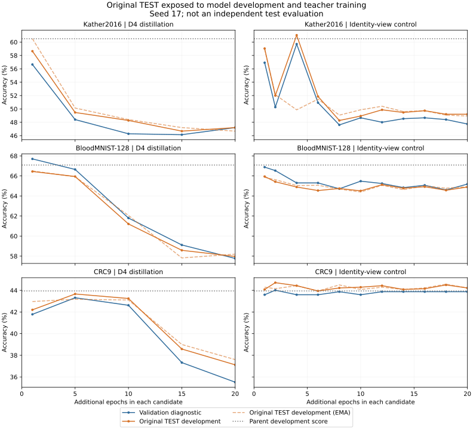

原TEST已按人工授权用于权重选择、错例分析、教师训练及学生蒸馏输入。下表原TEST分数为开发指标，不能作为独立测试泛化性能。全部为seed17单次实验，无均值/标准差。
| 任务 | D2NN原TEST | LG TRAIN | LG VAL诊断 | LG原TEST开发 | 差值 |
|---|---|---|---|---|---|
| Kather2016（8类） | 40.69% | 64.30% | 59.71% | 61.04% | +20.35 pp |
| BloodMNIST-128（8类） | 59.98% | 80.01% | 78.39% | 79.13% | +19.15 pp |
| CRC-VAL-HE-7K（9类） | 59.75% | 75.61% | 67.27% | 73.33% | +13.58 pp |
差值为百分点；20个百分点是优化目标，尚未达到的任务不取整为达标。D2NN同时比较best/last，未降低参照。LG使用更多训练预算及教师数据，不能将差值全部归因于等预算架构优势。
| 任务 | 方法 | 状态 |
|---|---|---|
| Kather2016（8类） | D4蒸馏 | 完成20轮；选中parent / 第0轮；开发准确率60.51% |
| Kather2016（8类） | 无增强保守蒸馏 | 完成20轮；选中online / 第4轮；开发准确率61.04% |
| BloodMNIST-128（8类） | D4蒸馏 | 完成20轮；选中parent / 第0轮；开发准确率67.09% |
| BloodMNIST-128（8类） | 无增强保守蒸馏 | 完成20轮；选中parent / 第0轮；开发准确率67.09% |
| BloodMNIST-128（8类） | 冻结光路由＋边界损失 | 完成30轮；选中online / 第20轮；开发准确率79.13% |
| BloodMNIST-128（8类） | 随机主相位＋冻结光路由＋边界损失 | 完成30轮；选中online / 第24轮；开发准确率74.48% |
| CRC-VAL-HE-7K（9类） | D4蒸馏 | 完成20轮；选中parent / 第0轮；开发准确率43.94% |
| CRC-VAL-HE-7K（9类） | 无增强保守蒸馏 | 完成20轮；选中online / 第2轮；开发准确率44.71% |
| CRC-VAL-HE-7K（9类） | 冻结光路由＋边界损失 | 完成30轮；选中online / 第24轮；开发准确率71.38% |
| CRC-VAL-HE-7K（9类） | 随机主相位＋冻结光路由＋边界损失 | 完成30轮；选中online / 第30轮；开发准确率61.42% |
| CRC-VAL-HE-7K（9类） | 边界目标受限接续 | 完成35轮；选中online / 第20轮；开发准确率72.14% |
| CRC-VAL-HE-7K（9类） | 成熟主干固定路由控制 | 完成40轮；选中online / 第30轮；开发准确率72.77% |
| CRC-VAL-HE-7K（9类） | 成熟主干温和联合路由 | 完成40轮；选中online / 第38轮；开发准确率73.33% |
选中parent / 第0轮表示保留蒸馏前的相位，不能称为蒸馏提升。D4与无增强对照还改变了batch、路由学习率、辅助损失及KD权重，不作单因素因果归因。
每条蒸馏分支从同一开发父权重起步，不能将两条分支相加为所选权重的连续训练轮数。总探索预算另计基础60轮＋VAL优化30轮＋各蒸馏候选实际轮数；两条各20轮完成后为130轮，另加教师头训练和ImageNet预训练。新边界候选从保守蒸馏best起步，其额外轮数继续计入JSON的总探索预算。
Optical router224 + 4x224 experts, Top2, gap30, global478; E -> OEO -> G -> OEO -> fixed CCD; 479364 phase parameters; no learned electronic frontend/readout。
Three continuous478 phase layers, no intermediate OEO, fixed same CCD regions; 685452 phase parameters; no learned electronic frontend/readout。
两次OEO：光强→按均值归一→I/(1+I)→L2振幅归一→实振幅重编码；末端读出位于第二次OEO之后。它是固定电子非线性，不是无电子处理的被动光学，也不是Kerr材料非线性。
固定输入：[R,G;B,0]，每通道112²、拼接224²、单位功率。LG每专家接收224²；D2NN插值到478²。固定CCD区域覆盖有效478²面，8类2×4、9类3×3。无Linear/CNN分类头。波长532nm、像素17μm、传播10cm、画布518²。
曲线分别显示VAL诊断和已暴露的原TEST开发分数，不将训练目标损失当作训练准确率。此图只展示前两轮蒸馏，各任务两图使用一致纵轴；新边界候选的逐轮指标另保存在各自history.json，最终结果均列入上表。

已测六种固定等功率专家对；均未超过原动态路由。真实标签选择专家对的结果仅为不可部署的反事实诊断，不作为LG准确率，也不是可变功率路由的性能上界。路由偏置仍存在，但不能据此认定强制均衡必然提升。
教师是冻结ImageNet ResNet18＋可训练MLP，在TRAIN和原TEST增强视图上训练；学生硬标签CE只用原TRAIN，教师KL使用TRAIN和原TEST。教师准确率不能当作LG准确率。原TEST错例不自动删样本、改标签。
完整指标、来源权重SHA、各轮预算、逐样本路由与独立运行身份保存在对应run。数据级重复检查不能替代患者独立性验证。原VAL选模结果保留。
生成时间UTC：2026-10-30T21:32:04.864414+00:00；机器可读汇总：results.json；权重校验：checkpoint_transfer.json。